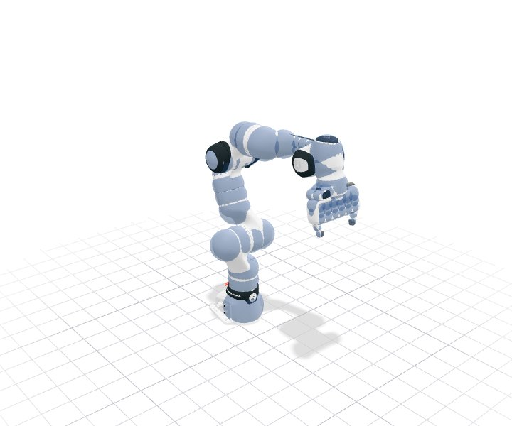
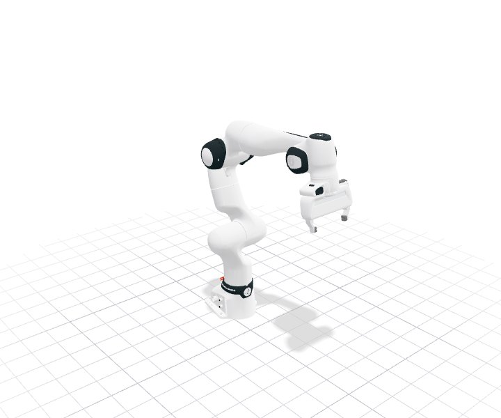
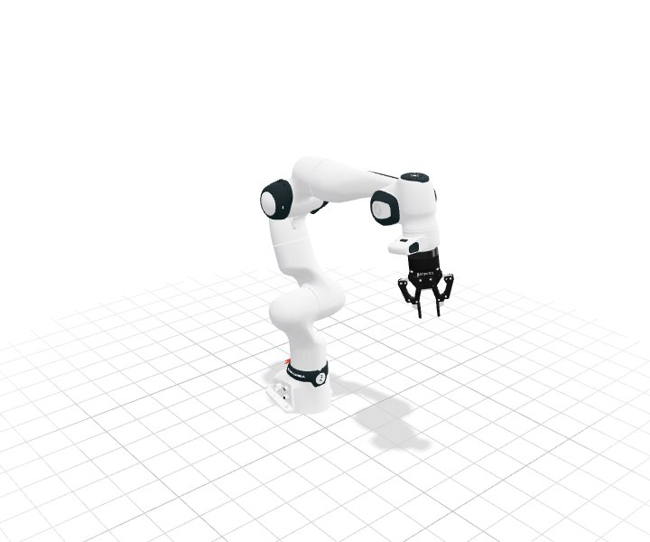
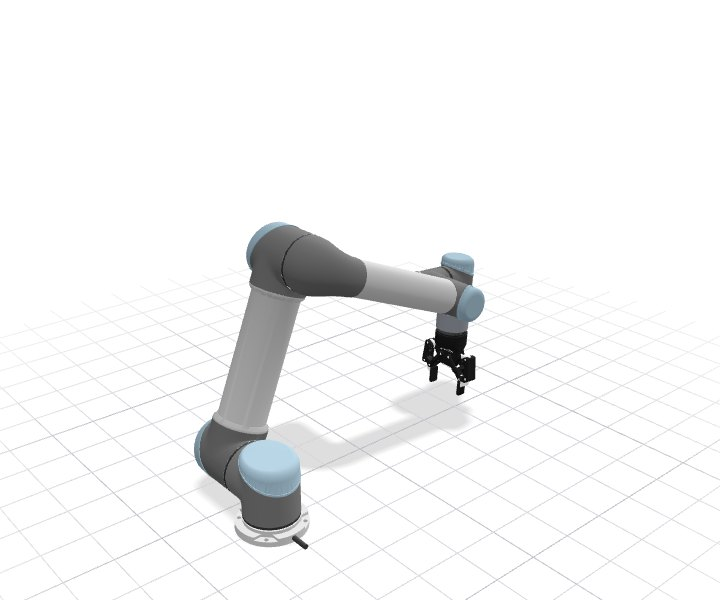
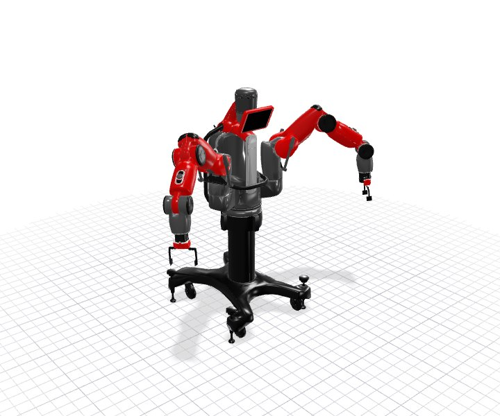
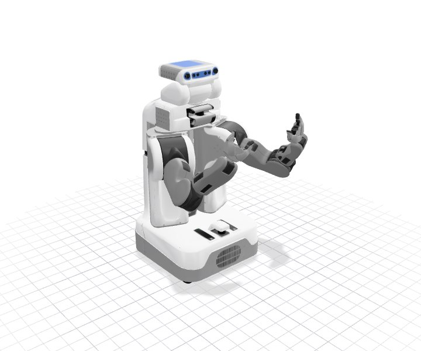
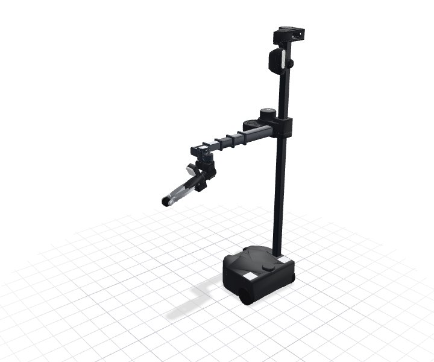
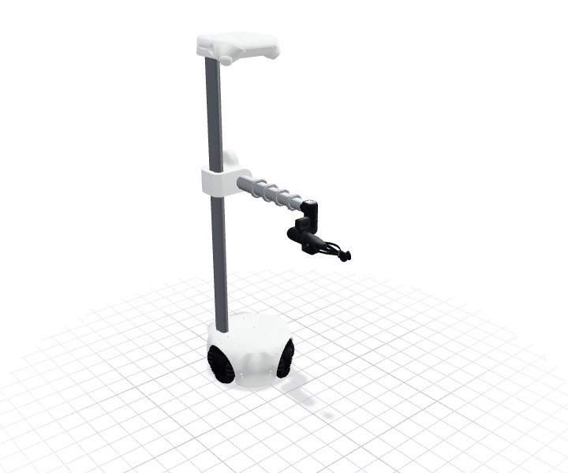
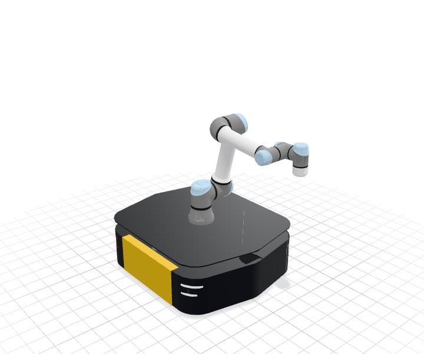
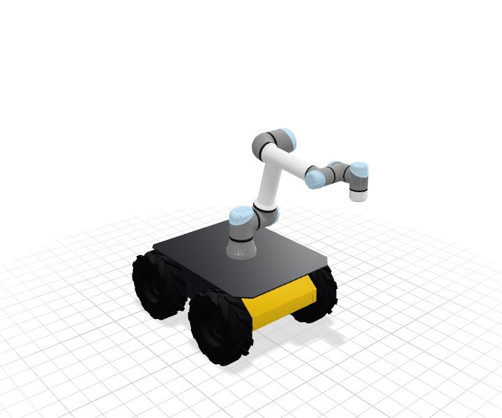

Robot Guides#
geodex includes nine robots, from fixed-base arms to mobile manipulators. Each robot comes as a configuration space with its joint limits, a kinetic-energy metric from its mass matrix, a lower bound of that metric for the planner’s heuristic, and a VAMP collision model.
Plan an FR3 that moves a held box between two shelf compartments, under the Euclidean and the kinetic-energy metric, with VAMP collision checking.
Plan three Clearpath mobile robots between the desks of an office, where the drive changes only the weights of the \(\mathrm{SE}(2)\) metric.
Plan the base and the arm together for a Stretch 3, a Stretch 4, and a UR5e on a Husky and on a Ridgeback.
Turn a URDF into collision spheres, a VAMP model, a generated mass matrix and its lower bound.
The catalog#
Every robot is a Python class in geodex.robots and a value of the
geodex::robots::Robot enumeration in C++. The configuration of a mobile robot is its
base pose \((x, y, \theta)\) followed by its joint values. Its metric adds a left-invariant
metric on the base pose, holonomic or differential drive, to the kinetic-energy metric of its
joints. The mass matrix of every robot is C++ code generated from its description with
Pinocchio’s Composite Rigid Body Algorithm (CRBA), and planning does not need a dynamics
library.
The snippet lists the robots and the number of coordinates of each.
import geodex
for name in geodex.robots.available():
print(f"{name:>16}: {geodex.vamp.robot_dimension(name)} coordinates")
Full example: examples/robots/catalog.py
#include <cstdio>
#include <string>
#include <geodex/integration/vamp/registry.hpp>
#include <geodex/robots/mass_matrix.hpp>
int main(int argc, char** argv) {
namespace gr = geodex::robots;
namespace gv = geodex::integration::vamp;
for (const auto robot : gr::registered_robots()) {
const std::string name(gr::name(robot));
std::printf("%16s: %d coordinates\n", name.c_str(), gv::robot_dimension(name));
}
return 0;
}
Full example: examples/robots/catalog.cpp
Robot |
Python class |
Coordinates |
Base |
VAMP spheres |
|---|---|---|---|---|
Franka Panda |
|
7 |
fixed |
59 |
Franka FR3 with a Robotiq 2F-85 |
|
7 |
fixed |
60 |
Universal Robots UR5 |
|
6 |
fixed |
40 |
Rethink Baxter, both arms |
|
14 |
fixed |
75 |
Willow Garage PR2, both arms |
|
14 |
fixed |
77 |
Hello Robot Stretch 3 |
|
8 |
differential drive |
148 |
Hello Robot Stretch 4 |
|
8 |
holonomic, three omniwheels |
160 |
Clearpath Ridgeback with a UR5e |
|
9 |
holonomic, mecanum |
114 |
Clearpath Husky A200 with a UR5e |
|
9 |
differential drive, skid steer |
130 |
Collision checking#
The planner and the smoother check the robot as a set of spheres, its VAMP collision model,
against the obstacles of the scene and against the robot itself. The spheres of a body attached
with geodex.vamp.attach_spheres move with the robot and are checked the same way.

The Panda with the 59 spheres its VAMP model checks. The Spheres button hides them.
Gallery#
Each robot below is drawn with the meshes of its description and repeats a short motion of its joints. Drag to orbit, and use the controls to pause the robot or move it along the motion. The Spheres button shows the spheres of the robot’s VAMP collision model over its meshes.








